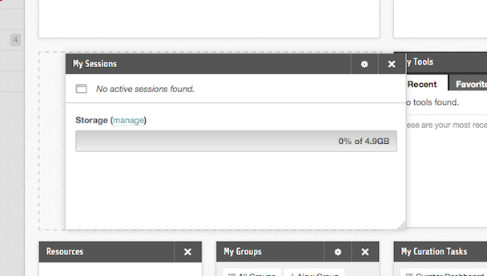

Hub users
Member dashboard
The dashboard is the first tab of your member area and the page you land on after logging in. It is a grid of modules — small panels showing one thing each — that you arrange yourself. Typical ones are My Sessions, which lists your running tool sessions and your disk usage, My Groups, My Projects, My Tools, My Questions, and My Contributions.
Only you see your dashboard. Opening another member's profile shows their public tabs; the Dashboard tab is not one of them.
A new account starts from the arrangement the hub set as its default. Whatever you change is saved as you change it and is there again at your next login.
Adding a module
- Select Add Modules at the top right of the dashboard.
- A pane opens listing every module the hub offers for the dashboard. Choose one from the list on the left to see its description, version, and any screenshots the module ships.
- Select Install Module. The module is added to your dashboard.
Modules already on your dashboard are shown as Module Installed and cannot be added twice.
Removing a module
- Move the pointer over the module. A small toolbar appears in its top right corner.
- Select the ✖ icon. It expands into a red Remove button.
- Select it again to confirm. If you wait more than a few seconds it reverts to the icon and nothing is removed.
Rearranging and resizing
- Move. Press and hold on a module's title bar, drag it where you want it, and release. The other modules move out of the way.
- Resize. Drag the bottom-right corner of a module.

Both are saved as soon as you let go.
Module settings
Some modules carry their own settings — how many items to list, which tab to open on. Those modules show a ⚙ icon beside the remove icon; selecting it opens the settings above the module's content, where Save applies them. Modules with nothing configurable have no ⚙ icon.
Settings you change here apply to your copy of the module only.
If your hub has locked the dashboard
An administrator can switch personalisation off. When that has been done, the Add Modules button is absent and modules cannot be dragged, resized, or removed; everyone gets the hub's arrangement. The dashboard still works, it just cannot be changed.
An empty dashboard reads Your Dashboard is Empty, with the advice to use the add modules button in the top right.
Rewritten and checked against 2.4-main @ 1924c22171 on 2026-09-09.